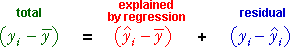

General linear model (GLM)
The same methodology can be used for any GLM, irrespective of the number of explanatory variables.
Sums of squares
Again the individual values can be split into components.

and their sums of squares satisfy a similar equation.

Coefficient of determination
As in the 1- and 2-explanatory variable models, the relative sizes of the regression and residual sums of squares again reflect how well variation in the response is modelled by the explanatory variables. The proportion of the total variation that is explained by the explanatory variables is called the coefficient of determination, R2,

Anova table
The component sums of squares can again be arranged in an analysis of variance table,
Note that the explained sum of squares has (p - 1) degrees of freedom since there are (p - 1) explanatory variables and hence (p - 1) slope parameters.
Are any explanatory variables related to Y?
More formally, we want to test the following hypotheses.
| Hypotheses | Meaning |
|---|---|
| none of the explanatory variables are related to Y | |
| at least one explanatory variable is related to Y |
The F ratio in the anova table can be used as a test statistic for these hypotheses.
Big F ratios provide evidence that H0 is false and hence that at least one explanatory variable is related to Y.
If the null hypothesis is true (i.e. all slope parameters are zero), the F ratio has a standard distribution called an F distribution with (p - 1) and (n - p) degrees of freedom, but it tends to be higher if any slope parameter is non-zero.
The p-value for the test is therefore the probability of getting such a large F ratio when H0 is true and can be found from the upper tail area of this F distribution.
In practice, computer software should be used to evaluate the p-value.
Water usage of production plant
A production plant cost-control engineer is responsible for cost reduction. One of the costly items in his plant is the amount of water used by the production facilities each month. He decided to investigate water usage by collecting seventeen observations on his plant's water usage and other variables.
| Variable | Description |
|---|---|
| Temperature | Average monthly temperature (â«F) |
| Production | Amount of production (M pounds) |
| Days | Number of plant operating days in the month |
| Persons | Number of persons on the monthly plant payroll |
| Water | Monthly water usage (gallons) |
Least squares resulted in the following linear model to explain water usage in terms of the four explanatory variables,
Water = 6360 + 13.9 Temperature + 0.212 Production - 127 Days - 21.8 Persons
The following anova table describes the fit of the model.
| Source | DF | SS | MS | F | p-value |
|---|---|---|---|---|---|
| Regression | 4 | 2,448,834 | 612,208 | 9.88 | 0.001 |
| Residual | 12 | 743,797 | 61,983 | ||
| Total | 16 | 3,192,632 |
From the p-value in the table, we conclude that there is extremely strong evidence that at least one explanatory variable is related to water usage.
The anova table also lets us calculate that R2 = 2,448,834/3,192,632 = 76.7% of the variation in water usage can be explained by the four explanatory variables.
Having concluded that at least one explanatory variable is related to water usage, we can investigate whether all four are needed, or perhaps a smaller number would be adequate. We described earlier how to test the significance of individual variables in the 4-variable model.
The overall F test for the whole model and the separate t-tests for individual variables complement each other.